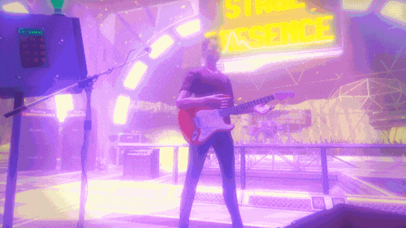

Stage Presence
Your bands gear fries onstage and it’s up to you to keep the crowd from rioting in this free-form music game.
Credits
Edit/Animation - Marlon Wiebe
Game/Tech - Jon Dadley
Making Of
Since Jon had rigged up an IK rig for the player’s in-game avatar, I knew I wanted to try and film everything inside game instead of doing mixed-reality. This is something I’d done to a small extent with an alternate version of my previous VR trailer HoloBall, and also something the Kert Gartner had done to great effect in his Space Pirate Trainer trailer. I was also excited about this idea because it’s SO MUCH EASIER OH MY GOD and still allows for tons of creativity.
{: .col-12 } Puppetting the in-game avatar and using some of the props you’ll find on stage.{: .image-comment }
This meant that I was going to need to have custom controls from Jon in order to get the angles that I was hoping for. After some testing and some back and forth, Jon implemented camera controls on the Vive’s touchpads, the left for panning, the right for lateral movement.
 {: .col-12 }
The viewfinder in-game.{: .image-comment }
{: .col-12 }
The viewfinder in-game.{: .image-comment }
One problem with this is that if I was to record it all myself, how was I supposed to move the camera while acting? We solved this by adding a movement lock button that would keep the camera moving in whatever direction/pan it was on. That way, I could set the camera to move and start acting while it was moving around me.
 {: .col-12 }
Camera auto-pan!{: .image-comment }
{: .col-12 }
Camera auto-pan!{: .image-comment }
Jon was super quick with implementing these changes and once it was working, I was off and capturing epic shots of the amazing locations that Jon’s made in the game and made sure to get some great shots of the epic BASS DROP. :)
 {: .col-12 }
BASS DROP!{: .image-comment }
{: .col-12 }
BASS DROP!{: .image-comment }
Jon’s added some awesome features in the game including tight integration with Twitch which looks super interesting and I’m excited to see how it turns out.
Head on over to the Steam page and check it out! :)